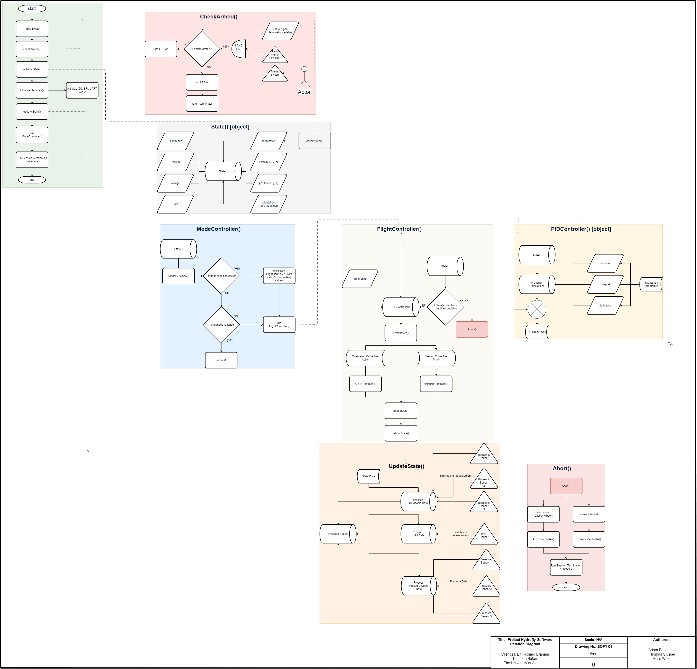

Project Hydrofly
As part of my Aerospace Engineering degree requirement at the University of Alabama, I am required to take a series of two Senior Design courses. Through these courses, I work on a year-long aeronautics or astronautics design project with a team.
Despite my prior experiences with building, designing, and flying fixed-wing model airplanes and drones, I selected an astronautics project since I wanted to expand my knowledge of Aerospace.
Project Hydrofly is a client-based project which requires a final demonstration on March 2019. As part of UA's effort of increasing research in astronautics, my team was asked to build a testbed for planetary landers, propulsion, and controls research projects.
This past semester (Fall 2018), my primary role as the Systems Integration Lead was to develop a simulation and make several key assumptions to identify project feasibility. Through the process of creating the simulation, I produced several equations which will be used in the flight control system. As more unknown system parameters were identified through subsystem analyses and trade studies, I lead the improvement efforts for the simulation to determine subsystem goals. I also developed the mathematical model and algorithm for a pulsed throttle control system for hovering.
The simulation proved that a pulsed throttle control system could theoretically work to make a vehicle ascend, hover, and descend. We know that a certain delta-v, ∆𝑣, is needed for a stationary vehicle to experience motion. This ∆𝑣 could be calculated using the rocket equation, shown below. ∆𝑣 = 𝑔 ∙ 𝑑𝑡 + 𝑢𝑒∙ ln(𝑚𝑖/𝑚𝑓) In this equation, gravity is constant, flow velocity 𝑢𝑒 is determined by the system’s properties, and 𝑑𝑡 is chosen by us based on the period length of a duty cycle. The period length will be determined in the future based on the solenoid valve’s response rate and trial-and-error through numerous simulations and tests. This equation indicates that the only thing that can be controlled is the difference between the initial mass and final mass over a finite period, 𝑑𝑡. This expression provides us with the mass flow rate needed to obtain the desired ∆𝑣. 𝑚̇ = (𝑚𝑓 − 𝑚𝑖)𝑑𝑡 Rearranging the ∆𝑣 equation to solve for final mass provides us with the following: 𝑚𝑓 = 𝑚𝑖 ∙ 𝑒^(𝑔∙𝑑𝑡∙𝑢𝑒−𝑑𝑣∙𝑢𝑒) We can then relate the mass flow rate with the maximum mass flowrate (which is when flow is at 100%) to obtain the 𝑑𝑢𝑡𝑦𝑐𝑦𝑐𝑙𝑒 value outputted by the control system. This value is the fraction of time, over which, the solenoid valve will be expelling water out of the system to produce thrust. If 𝑚̇ > 𝑚̇@100% , then 𝑚̇ = 𝑚̇@100% . If 𝑚̇ < 0, then 𝑚̇ = 0, since the system cannot have negative thrust, or absorb propellant. Depending on the resolution of the duty cycle, the value obtained from these equations will be rounded to the nearest achievable duty cycle.

A Video of the successful test flight is shown below.
VIDEO HERE